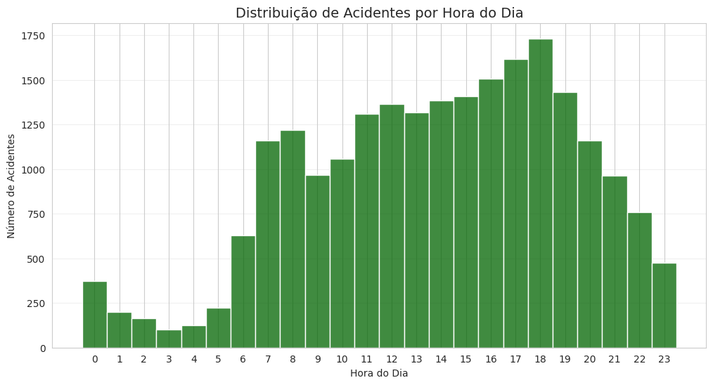

Exploratory Data Analysis (EDA)
The EDA phase aimed to understand the structure of the traffic accident data provided by DETRAN in 2020. Distributions, outliers, missing values, and dataset balance were explored to ensure quality for building the predictive model.
Data Cleaning and Quality
- Presence of missing values in the
pedestreandpassageirocolumns (~10%), handled through exclusion or conditional imputation. - Some records with age equal to 0 or negative were removed as they did not represent valid values.
- The
data_hora_boletimcolumn was converted todatetimetype to enable temporal analyses like hourly distribution. - Inconsistent values such as
"NAO INFORMADO"were filtered from the target variable to avoid noise in modeling.
Dataset Balance
The dataset shows significant imbalance between severity classes, as shown in the graph below:
Severity Class Distribution

- The “FATAL” class represents a minority, requiring strategies such as
SMOTEorundersampling. - The “NAO INFORMADO” class was removed to avoid bias in model evaluation.
Key Detected Patterns
- Greater severity in cases without seatbelt use.
Distribution by Seatbelt Use

- Drunk driving cases, though less frequent, are more associated with fatal
accidents.
Drunk Driving and Severity Distribution

- Accidents occur more frequently between 5 PM and 7 PM.
Accident Distribution by Hour

Quantitative Insights
- Variables such as age and number of people involved were analyzed using boxplots and quartiles by severity.
- Creation of a new feature
hora_acidentefromdata_hora_boletim. - A correlation heatmap showed that seatbelt non-use, alcohol consumption, and number of people involved have a positive correlation with higher severity.
Variable Correlation Heatmap

EDA Conclusions
The exploratory analysis revealed the need for cleaning, standardization, and dataset balancing. It was also essential in identifying key variables related to accident severity, such as seatbelt use, alcohol consumption, and age. These findings guided the feature engineering process and model selection.